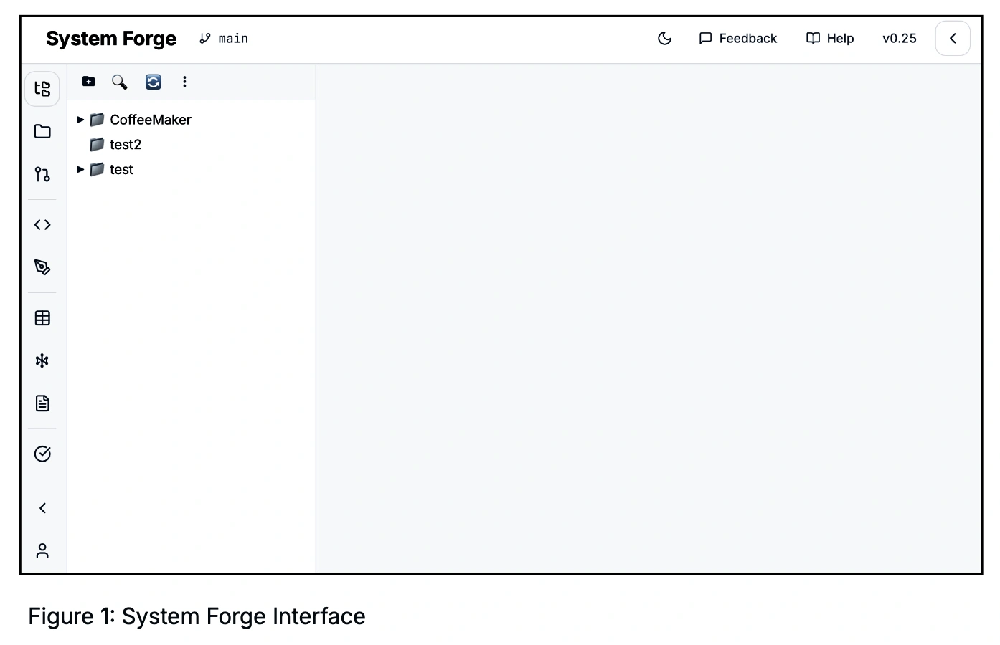
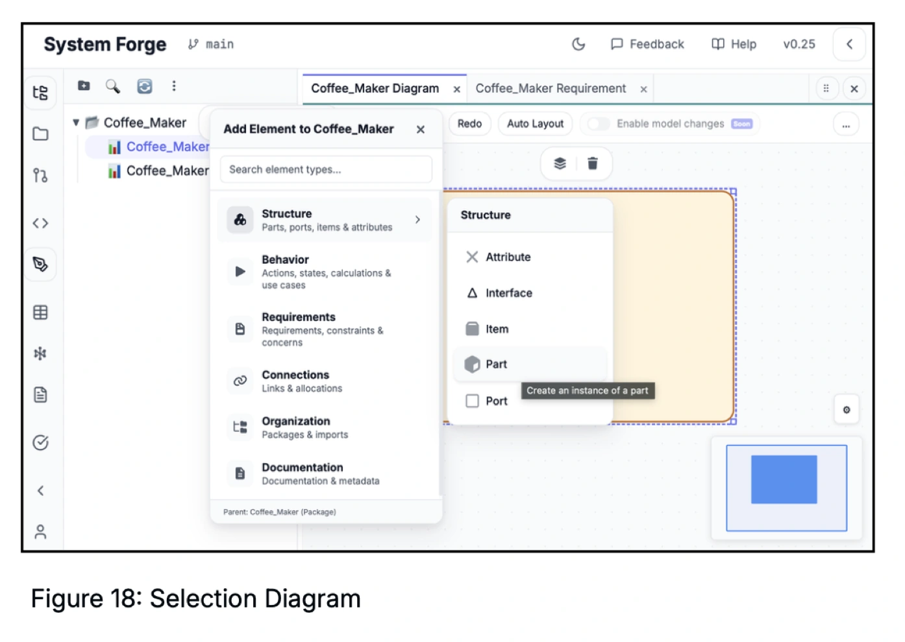

Context
System Forge is a model-based systems engineering (MBSE) tool in early development, created by Cauê Napier, a systems engineer at the Swedish Space Corporation. The goal: make SysML2 modeling more accessible — without requiring users to take a course first.
I contribute UX analysis and design documentation as a side project collaboration. My role: establish design foundations that can guide development decisions — principles, interface evaluation, and a roadmap for systematic improvement.
The Technical Challenge
SysML2 (released September 2025) specifies element semantics and core notation, but leaves presentation and interaction design to individual tools. This creates both constraint and opportunity: the interface must teach a complex modeling language while respecting a strict specification. Every design decision must distinguish between what the standard requires and where tooling can innovate.
Two User Journeys, One Design Challenge
The tool must serve two distinct learning paths simultaneously.
Designing for Learnability
Engineers who need MBSE but haven't used SysML before. The tool should teach the language through use — progressive disclosure, clear feedback, safe exploration.
Experienced SysML users adapting to v2's new terminology. The tool should bridge old and new — showing familiar names alongside v2 equivalents.
Approach: Principles Before Pixels
For a new product with a solo designer, establishing principles early prevents arbitrary decisions later. The sequence matters: abstract foundations must stabilize before committing to component-level design systems.
Values & decision criteria
Current state audit
Content hierarchy
Components & tokens
This order is intentional. Principles create constraints that make design decisions defensible rather than arbitrary. Interface analysis reveals which principles are already supported and where gaps exist. Information architecture defines where everything lives. Only then does a design system lock in component-level decisions — because changing tokens is expensive once they're in production.
Design Principles
Ten principles synthesized from product vision, UX research, and systems engineering requirements. Several principles emerged directly from Cauê's domain expertise — for instance, why Model Explorer visibility matters more than generic sidebar balance. Green = directly supports learnability.
Single source of truth. Diagram, tree, table, text all sync. Ref: Tufte, "Escaping Flatland"
Same meaning = same appearance. Consistency enables pattern recognition. Ref: Bertin; Tufte "Small Multiples"
Show what the task requires, hide the rest. Reduces cognitive load. Ref: Miller's Law; NNGroup
Selection syncs across all views instantly. Ref: Linked views pattern
Never "zoom in and get lost." Orientation supports learning. Ref: Shneiderman's mantra
Group by element type, not creation order. Ref: Information architecture
Filter or limit edges to reduce visual noise. Ref: Tufte "Layering and Separation"
Real-time vs. on-demand error checking — user controls interruption. Ref: B2B expert workflows
Generous undo, non-destructive defaults. Mistakes are cheap. Ref: Norman, Design of Everyday Things
Build on IDE/CAD conventions users already know. Ref: Jakob's Law
SysML2 Constraint Map
Understanding where the specification constrains design vs. where tooling can innovate.
Interface Analysis: Annotated Examples
The analysis evaluated first impressions and key workflow phases. Below are sample observations with annotations — noting both strengths and areas to explore further.

Users can identify where to find tools and where diagrams appear. Icon groupings in left sidebar are visible and logically separated by function.
Supports: Jakob's LawInterface is more modern than most systems engineering tools on first impression. Minimal visual clutter supports focus on the model content.
Supports: Professional trustAll sidebar icons have similar visual weight. Model Explorer could be more visually dominant since SE workflows start from the model tree.
Principle: #06 Type-FirstSome icons are flat line style while others have fills. Standardizing would strengthen visual grammar across the interface.
Principle: #02 Consistent Grammar
Elements organized into meaningful categories (Structure, Behavior, Requirements, Connections, Organization, Documentation) rather than flat lists.
Supports: #06 Type-FirstHovering "Part" shows "Create an instance of a part" — helping users understand SysML2 concepts in context. This directly supports learnability.
Supports: #03 Progressive Disclosure"Search element types..." input allows direct access without navigating categories. Supports both novice (browse) and expert (search) patterns.
Supports: FlexibilityWhen users search "Block" (v1 term), consider showing "Part" (v2 equivalent) with the old name visible. Supports users transitioning from SysML v1.
Learnability: v1→v2 usersSummary: Strengths & Recommendations
Key Strengths Identified
Recommendations for Review
Roadmap: Two Parallel Workstreams
Information architecture (where things live) and interaction design (how users accomplish tasks) can proceed in parallel — they inform each other. Both must stabilize before locking design system decisions.
Values, guidelines, decision criteria. 10 principles documented with references.
CompleteCurrent state audit. Workflows documented, observations mapped to principles.
CompleteContent hierarchy, sidebar structure, Model vs File Explorer, Views/Editors/Tools grouping.
In ProgressUser flows per workflow phase. Create diagram, add parts, connect elements, review/validate.
NextDeliverables
Reflection
On working with domain expertise: Design principles for a specialized tool require ongoing alignment with engineering knowledge. Cauê's systems engineering expertise shaped which principles matter most — for example, why "Model Explorer must be visually dominant" follows directly from SE workflow priorities, not generic UX logic. This kind of principle refinement happens through conversation, not isolation.
On documentation as design work: In early-stage products, clear documentation is as valuable as screens. Principles and analysis create shared understanding, reducing ambiguity and rework. The analysis report and roadmap are not byproducts — they're the foundation that makes future design decisions faster and more defensible.
On learnability as a design goal: Most MBSE tools assume training. System Forge asks: what if the interface itself teaches? Every tooltip, every visual cue, every error message is an opportunity to help users learn — not just use — a complex modeling language.